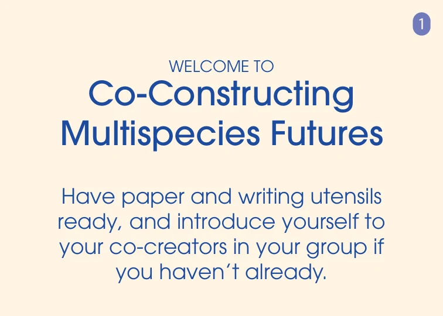
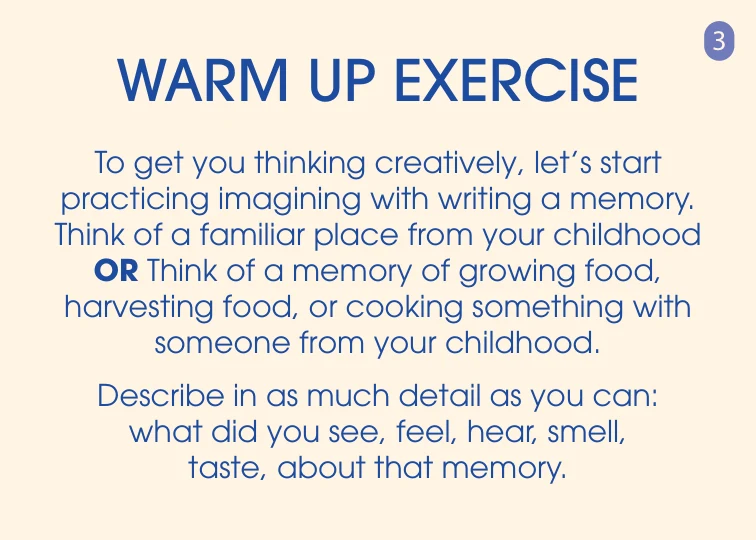
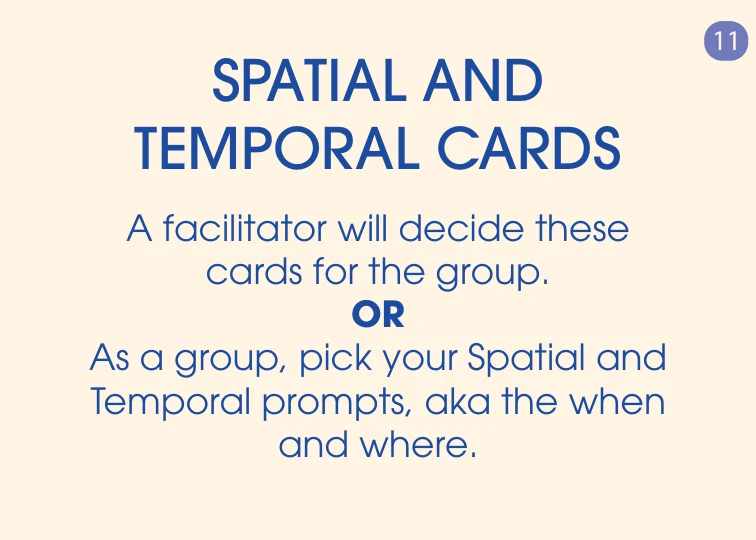
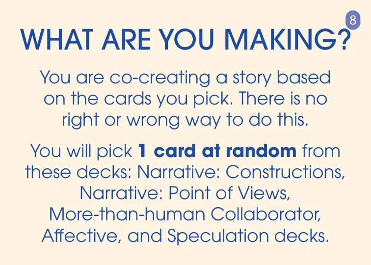
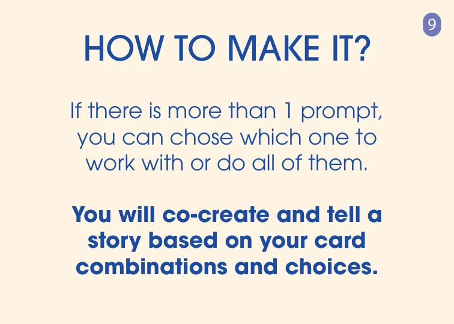
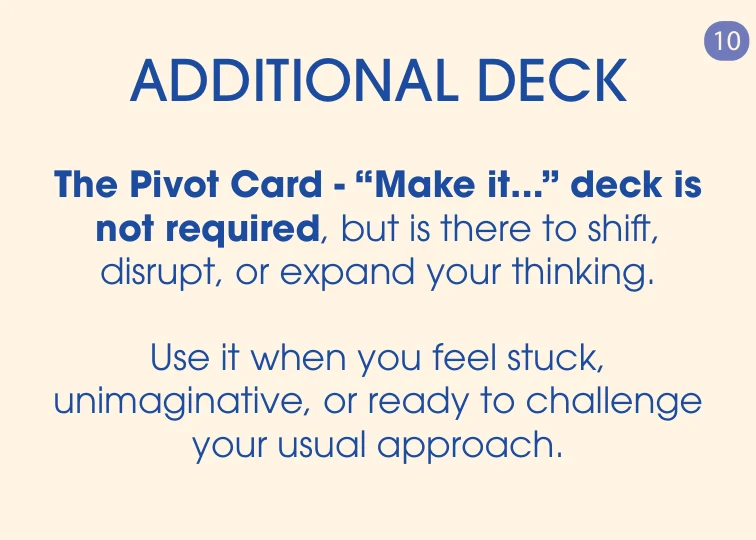
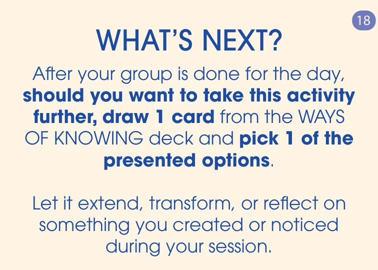

Original card 1 · PDF page 209
WELCOME TO Co-Constructing Multispecies Futures
Have paper and writing utensils ready, and introduce yourself to your co-creators in your group if you haven’t already.
Co-Constructing Multispecies Futures · Working guide
Welcome the group. Choose a time and place. Make a story together, then see what happens when you try it.
These eight original instruction cards guide the steps below. Read the card images or the text beside them; the original wording and spellings are preserved. You can also open the complete 18-card sequence.
Use the current 94-card general selection or the Interactive Tool to begin with Spatial and Temporal and add layers as they become useful. The original workshop recipe calls for a fuller draw; both approaches are explained in step 4.
Planning a gathering or looking for support? Try the workshop-planning draft or facilitation-help draft. These previews prepare a note in your browser; they do not send a request yet.
Gather paper and something to write or draw with. Introduce yourselves and separate the physical cards by category. Use the memory exercise to begin noticing through the senses.

Original card 1 · PDF page 209
Have paper and writing utensils ready, and introduce yourself to your co-creators in your group if you haven’t already.

Original card 3 · PDF page 213
To get you thinking creatively, let’s start practicing imagining with writing a memory. Think of a familiar place from your childhood OR Think of a memory of growing food, harvesting food, or cooking something with someone from your childhood.
Describe in as much detail as you can: what did you see, feel, hear, smell, taste, about that memory.
The source methodology acknowledges Jenn Stein’s Personal Street Corner exercise and the worldbuilding lineage of Jenn Stein and Alex McDowell.
Read the ground rules together. Decide how people can change the scene, who has final say, and how contributions will be credited. Imagine a future you would want to inhabit while leaving room for surprise, disagreement, and complexity.

Original card 7 · PDF page 221
Build on others: “Yes and ...”
Stay with in the “preferable”
Encourage wild ideas
Stay within the selected time frame
Set a place or scale, and a time or rhythm. The facilitator can choose these conditions, or the group can decide together. The physical cards offer several dimensions; choose the ones that help you begin.

Original card 11 · PDF page 229
A facilitator will decide these cards for the group.
OR
As a group, pick your Spatial and Temporal prompts, aka the when and where.
In the Interactive Tool: Spatial and Temporal are always active. They are enough for a first round.
Let the combinations give your imagined world a form: a story, sketch, object, sound, or scene. Build on one another’s contributions.

Original card 8 · PDF page 223
You are co-creating a story based on the cards you pick. There is no right or wrong way to do this.
You will pick 1 card at random from these decks: Narrative: Constructions, Narrative: Point of Views, More-than-human Collaborator, Affective, and Speculation decks.

Original card 9 · PDF page 225
If there is more than 1 prompt, you can chose which one to work with or do all of them.
You will co-create and tell a story based on your card combinations and choices.
A Pivot can shift the scale, perspective, medium, or way the story is told. Use one when you want a change.

Original card 10 · PDF page 227
The Pivot Card - “Make it...” deck is not required, but is there to shift, disrupt, or expand your thinking.
Use it when you feel stuck, unimaginative, or ready to challenge your usual approach.
In the Interactive Tool: Add Pivot when useful. Lock a result you want to keep and re-roll the other active layers.
The original closing card offers a Ways of Knowing prompt to carry the activity further. You can also move between telling, making, and trying throughout your session.

Original card 18 · PDF page 243
After your group is done for the day, should you want to take this activity further, draw 1 card from the WAYS OF KNOWING deck and pick 1 of the presented options.
Let it extend, transform, or reflect on something you created or noticed during your session.
In the Interactive Tool: Add Sensing or follow “Now: try it.” Move, listen, observe, sketch, handle a material, or rehearse another perspective. Return to “Tell it” with what you noticed.
Begin with a shared question and the people in the room. Use the cards to give an imagined world a form: a story, sketch, object, sound, or scene. Rehearse an encounter within that world, then return to making with what you noticed. These stages can repeat and overlap; adapt their length to your group and setting.
Meet another being or force, explore a relation through movement, or try another scale, pace, or constraint. These overlapping approaches invite you to enter the world while it is taking shape. Adapt the activity through attention, orientation, gesture, or scale to suit the bodies present. A rehearsal can remain unresolved and still matter.
Begin with what the other being can sense, do, and need. Let its limits and responses change the scene. In reflection, distinguish what you noticed from what you imagined; another being’s experience remains partly unknown. You can move between telling, making, and rehearsing while the scene is still taking shape.
Name an end to the roleplay. Ask what stayed with people, what surprised them, and what they want to carry forward or set down.
What changed when another voice or being entered? What felt possible? What remained difficult to imagine? Whose perspective is still missing? Share the scene and decide whether to carry a prompt into another round or beyond the gathering.
After a sensory memory warmup, agree on a time horizon. Each participant imagines a preferable future and writes a “What if…” prompt on a blank card. Pool the cards, then draw a Construction, a Speculation, and an Affect card together. Choose among the options and make a short sensory story. This is an adaptation of the FoodID Teachers handout, whose specific workshop imagined food-system futures in 2046.
You can supply a guiding question, your own spatial or temporal conditions, or an adapted prompt bank. The source edition’s food-system Speculation cards and the PLF 2025 deck are contextual collections. Keep that framing visible when you use them.
All 18 numbered facilitator cards appear in the original deck PDF, pages 209–244, with each front followed by its back. The guide above groups eight of them into a session; use the list below to follow the original order.
The complete source sequence is in the original deck PDF, pages 209–244. This printed guide includes the wording of the eight featured cards.
The general selection contains 94 original cards. Home-print PDFs are arranged for US Letter or A4. Fold-and-glue editions use 32 single-sided sheets; duplex editions use 16 sheets (32 PDF pages), printed portrait with long-edge flip. Use 100% / Actual size and print the separate calibration sheet first. Finished cards are 3.5 × 2.5 inches (88.9 × 63.5 mm). The professional 188-page file preserves production bleed and crop marks for a print provider.
The interactive tool runs in your browser. Export its slip and written notes, and download any recording before closing or reloading it. Voice recording depends on your browser’s microphone permissions.
Created by Ash Eliza Smith, developed in the Speculative Devices Lab with Julia McQuillan and Sam Bendix. The toolkit builds on The Thing From The Future (Candy & Watson, 2014) and the Rehearsing Realities framework (Smith, Leadabrand, et al., in press). Its embodied approaches are described in Performing the What-If, a chapter by Ash Eliza Smith and Julia McQuillan forthcoming in Strategic Handbook of Worldbuilding (Routledge). See About & cite for the chapter reference and the deck’s lineages.
Source and project history: github.com/ashelizasmith-create/co-constructing-multispecies-futures. Original card images and transcriptions are from the 2025 source edition. The surrounding guidance describes the current modular approach.